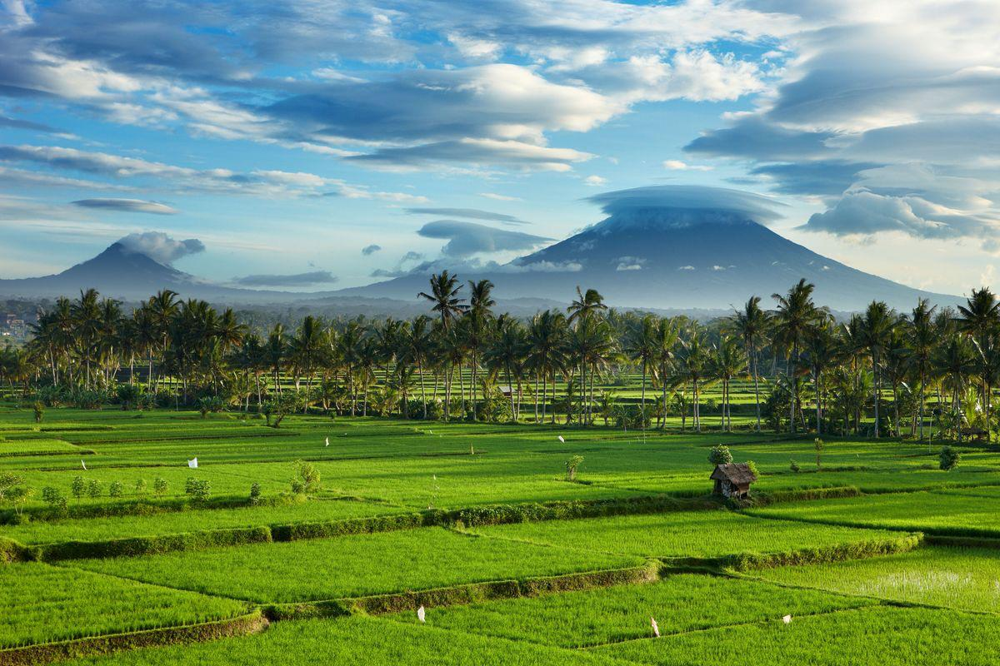
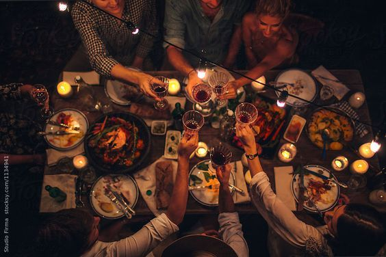
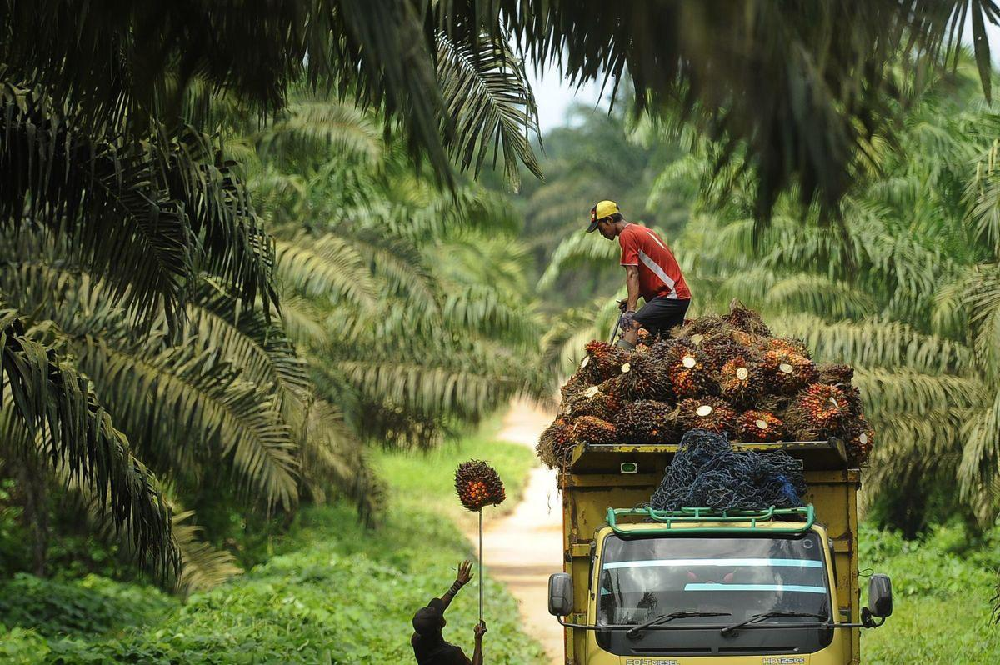
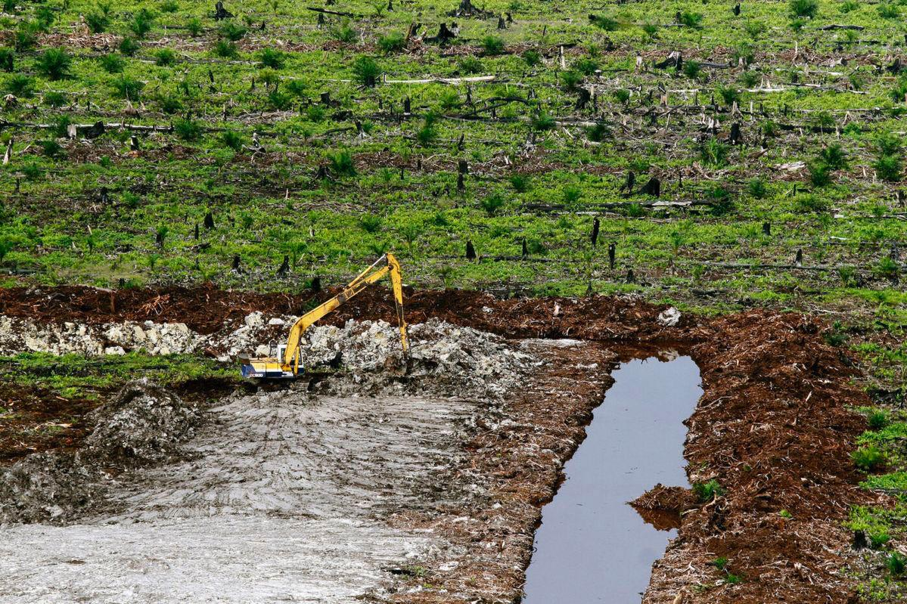

Kenapa Ekonomi Membutuhkan SDA?

Ketergantungan Ekonomi pada SDA
- Dapat menjadi komoditas ekspor yang memperkuat ekonomi negara.
- Menjadi bahan baku untuk produksi barang industri dan pabrik.
- Pengekstrakan sumber daya alam menjadi lapangan kerja banyak orang.
- Sumber daya alam adalah sebagai sumber tenaga bagi banyak cabang dan aktivitas ekonomi.

SDA membutuhkan waktu sangat lama untuk terbentuk.

Kecepatan konsumsi manusia lebih cepat daripada regenerasi SDA.

SDA tidak merata di setiap wilayah sehingga jumlahnya terbatas.

Eksploitasi berlebihan membuat SDA cepat menipis.

Pencemaran menyebabkan berkurangnya SDA yang layak digunakan.
Contoh Konflik Nyata

Konflik Sawit
Ekspansi perkebunan sawit memicu perebutan lahan dan kerusakan lingkungan.Konflik Tambang
Kegiatan tambang sering memunculkan pencemaran dan kerusakan lingkungan sekitar untuk masyarakat sekitar.

Konflik Energi
Pembangunan infrastruktur energi memicu pertentangan dengan keberlangsungan lingkungan dan hidup sekitar.DILEMA: INGIN MAJU, TAPI BUMI RUSAK
Pro - Pertumbuhan & Industrialisasi lebih lanjut
- Urbanisasi mendorong pembangunan kota & pusat ekonomi baru.
- Industrialisasi bisa memperkuat ekonomi nasional..
- Produktivitas barang buatan tangan lebih efisien dan meningkat.
- Penyerapan tenaga kerja meningkat jika industri bertambah kualitas dan juga kuantitas.
- Produk lokal hasil industri dengan kualitas tinggi dapat menjadi komoditas ekspor dan memperkuat ekonomi negara.
Kontra - Lahan Agraris Menipis
- Berisiko konflik lahan, ketidakstabilan infrastruktur dan harga tanah menjadi sangat tinggi.
- Urbanisasi semakin cepat dan membuat tekanan pada ruang dan makhluk hidup lainnya.
- Emisi karbon akibat industri akan meningkat secara drastis.
- Industrialisasi negara yang belum siap beradaptasi, karena kualitas produksi dan teknologi yang masih tertingga.l
- Indonesia menjadi ketergantungan pada negara lain untuk impor bahan agraris karena produksi dalam negeri semakin tidak mencukupi.